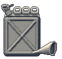

GAS-2-GO
GAS / DIESEL / KEROSENE
Never let the needle touch E. Fill the tank, then fill the cans. We check your oil while you wait.
GAS CANS
MOTOR OIL
ANTIFREEZE
ICE
ROAD MAPS
CLEAN RESTROOMS
OPEN 7 DAYS
WE ACCEPT VISA & MASTERCARD
(502) 555-0103